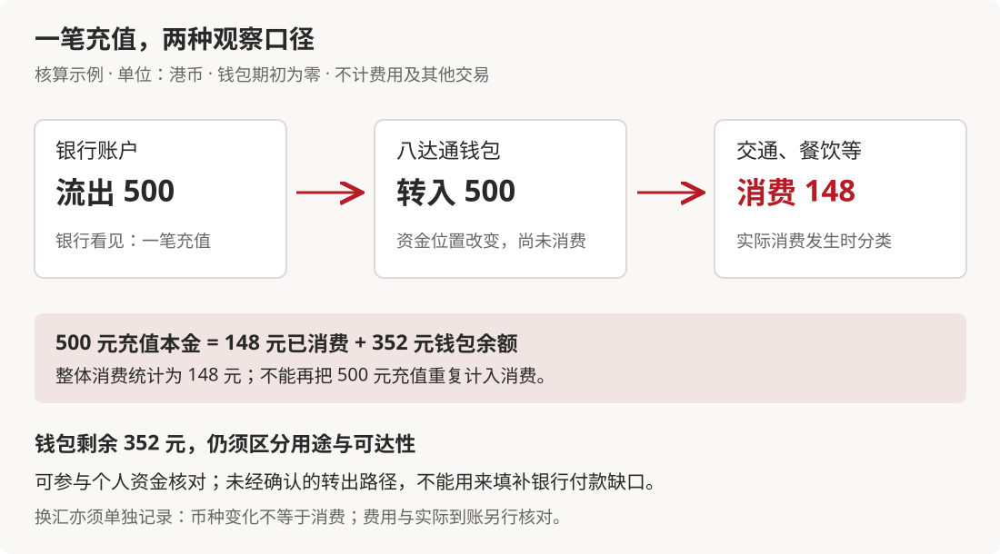
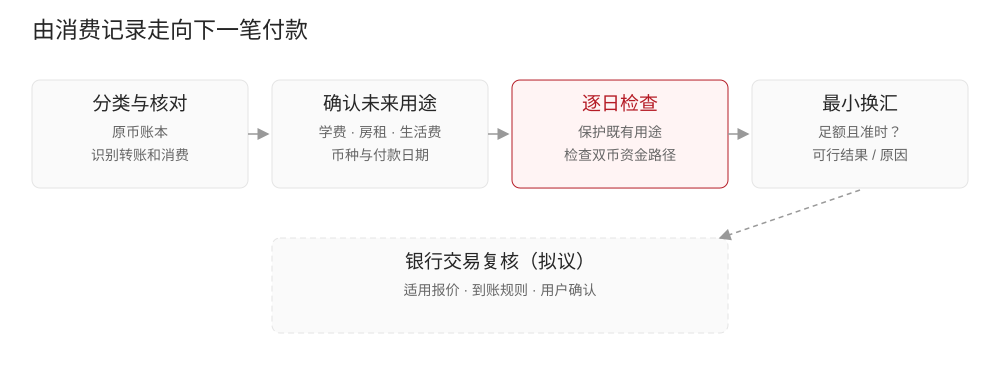
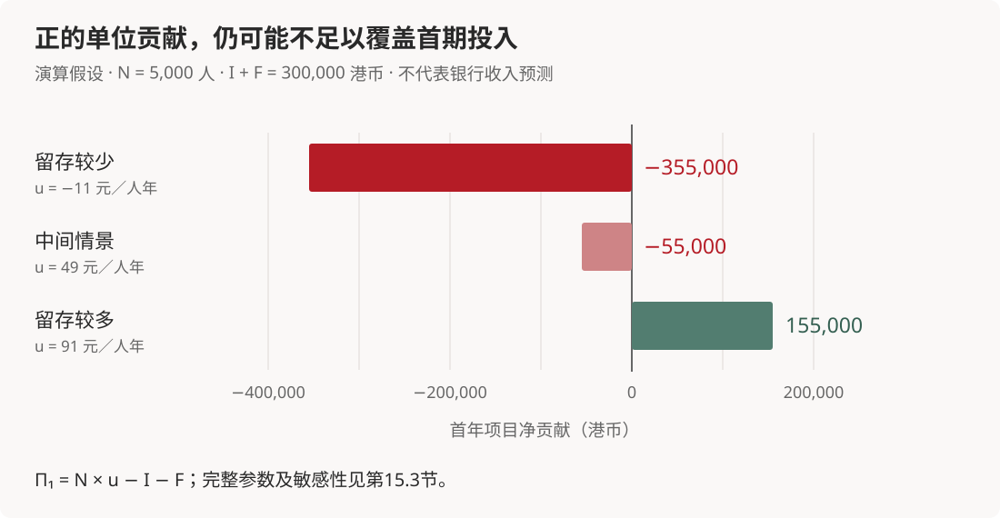

工银e港通
赴港青年双币资金管理助手
人民币—港币账务核算与跨期付款规划方案
第十七届“工行杯”全国大学生金融科技创新大赛
参赛方向：青年群体服务
2026年10月9日 ｜ 技术实现：v0.8.0
本项目面向同时使用人民币与港币的赴港学生及初入职场青年，将消费记录、日常预算与未来付款安排相衔接，帮助用户核对资金去向，并判断新增支出是否会影响后续必要付款。
正文依次讨论业务问题、产品方案、数据结构、约束模型、算法与实验、银行集成及实施路径。技术结论由文内算例和可复现实验支撑；在线原型用于展示操作过程和结果解释。
本项目为独立参赛方案。涉及银行与八达通的生产接入，按文中所述合作条件实施。
1 摘要
跨币种个人资金管理需要同时辨认资金转移、最终消费及未来付款能力。换汇改变币种，充值改变资金所在载体，账户扣款并不总是意味着消费已经发生。与此同时，日常支付币种的改变可能影响金额参照和预算理解，但具体行为效果需要与核算事实区分。对于在香港求学或开始工作的非本地青年，学费、租金等大额款项往往提前到账，其支付日期又与日常消费、生活费汇入或工资发放错开。账户余额因而包含不同用途和期限的资金，仅依据折算总资产或月度收支结余，难以判断一笔新增消费是否会影响后续必要付款。
工银e港通把消费记录、日常预算与未来付款安排纳入同一资金管理流程。账本保留原币金额，区分内部转移、兑换、退款和最终消费；分类与筛选用于理解支出，核对后的余额则用于安排未来付款。用户登记生活预算及必要事项后，系统分别计算两种币种的逐日资金路径。针对新增购买，再检查来源资金用途、目标币种缺口及兑换到账期限，在固定报价和费用条件下计算最小兑换额。不存在可行解时，返回限制条件及对应日期，供用户调整安排。
本项目的增量在于使历史资金核算能够衔接未来支出判断。统计排除不改变真实余额，钱包充值不重复计作消费，已登记用途也不会因账面余额充足而被忽略。用途预留、逐日原币余额和兑换决策由此联动，既解释资金已经如何使用，也分析下一笔支出是否可承担。八达通明细补充香港本地消费记录；整数金额求解与逐分验证则支撑兑换结果的可复核性。
系统已实现可独立运行的网页原型与模拟银行宿主适配层。技术验证包括136项自动回归测试，以及2,000组五日双币合成案例的独立逐分枚举对照。后者包含421组需换汇、682组无需换汇和897组不可行案例，求解器的可行性判断及最小金额均与枚举结果一致。约束消融进一步表明，在该实验分布下，忽略未来资金义务或兑换到账条件会产生错误放行。实验结论限于所定义的模型与输入范围，不涉及实际客户行为或银行经营收益的统计估计。
实施上，项目定位为银行现有账户与跨境服务中的规划模块。银行负责身份认证、授权数据、可执行报价及交易复核，规划模块负责资金约束计算和结果解释。首期采用手动输入、标准化文件导入和模拟宿主验证业务流程；生产接入重点补充账户可达性、营业日、报价有效期和交易回执机制。项目由此形成从资金核算、付款分析到交易前复核的连续流程，为跨境青年资金管理提供具有明确计算依据的辅助工具。
2 业务背景与问题界定
2.1 从银行支出到实际消费：记录对象的差异
赴港青年的资金常依次经过人民币账户、港币账户和八达通等支付工具，最后用于交通、餐饮或其他生活消费。这条路径包含性质不同的事件：换汇改变币种，充值改变资金所在的账户或载体，向商户付款才形成相应的最终消费。银行流水能够准确记录本账户的出入，却未必能够呈现资金离开本账户后的用途。因此，某笔扣款是否属于“消费”，必须先说明观察的是单个银行账户，还是用户的整体资金。
例如，用户从港币账户向八达通充值500元，随后乘车、用餐合计支付148元。对银行账户而言，500元已经流出；对覆盖银行及钱包的个人资金账本而言，充值本金仍由用户以储值余额的形式持有，消费目前为148元，钱包尚余352元。本例假设钱包期初为零、没有手续费、退款或其他交易。如果把充值500元和钱包支出148元都计入消费，会重复统计；如果只保留“八达通充值500元”，则不能解释何时、在哪里、为何消费，也会把未消费的352元提前记作生活开销。

图1同时说明另一项限制：未消费余额不等于可随时用于任何付款的银行资金。钱包中的352元仍有使用价值，但不能在缺乏可验证转出路径时，直接计入学费或租金的付款能力。项目因此同时保留消费统计与支付能力两种口径：前者判断经济用途是否已经实现，后者判断特定日期、币种和渠道上是否存在可用资金。图中的金额为核算示例，不代表任何钱包的提现服务条款。
这一问题与充值是否即时到账无关。即使充值立即成功，银行仍可能只看到资金转出，而看不到钱包内的最终消费。八达通明细的价值在于补全资金用途和消费日期，而非假设充值存在普遍延迟。若由内地人民币卡直接为八达通充值，仍应区分人民币扣款、实际入账港币及可能的费用；不能为了套用模型而虚构一个中间港币银行账户。
2.2 从人民币到港币：金额参照与预算感知
更换日常支付币种后，用户既要适应本地价格，也要重新建立对金额大小的参照。人民币余额、港币标价与原有人民币预算之间需要反复换算；已经兑换的港币还可能被单独视为“在港生活资金”，逐渐脱离最初的资金来源和用途。这里存在两个应分开讨论的机制：对外币名义数额的判断，以及对不同资金账户所作的心理分类。
Raghubir与Srivastava的实验发现，陌生外币的名义数值可能影响商品估值，汇率调整并不总是充分，且经验与时间压力会影响这种效应[1]。该研究并不支持“换成港币后必然花得更多”的结论，也不能据此推算人民币—港币用户的行为幅度。Thaler关于心理账户的研究则说明，人们会按照来源和用途组织资金，预算分类会影响选择[2]。支付形式研究进一步表明，支付与消费的联系及其显著性可能影响支出决策[3]；这为关注储值工具提供了理论线索，但并非对八达通用户的直接实证。
据此，本项目提出的是信息呈现上的设计要求：保留真实付款币种和金额，清楚展示其占相应生活预算的比例，并允许用户检查这笔支出对未来必要付款的影响。需要辅助折算时，应注明汇率与日期，并区分消费当时的实际人民币成本和当前参考估值。已有原币分类、预算偏差及逐日余额功能能够支持部分要求；固定个人参照汇率、历史兑换批次成本和常用币种对照仍属于后续设计，不能写成已经实现。
消费习惯的变化还可能来自香港物价、住房安排、收入变化、社交活动及生活阶段。仅凭换汇后的消费上升，无法识别货币感知的独立作用。本阶段不把行为改善作为已证实成效，也不依赖问卷或访谈支撑模型正确性；论证重点是系统能否持续提供口径一致、容易核对的资金信息。
2.3 从账户余额到可安排资金：用途与日期的约束
学费和租金往往提前到账，但付款发生在数周甚至数月之后。账户中的钱虽然已经可用，其中一部分仍承担明确的未来义务。若每次消费只看当前余额，用户容易将同一笔资金先后安排给多个用途。预算分类只能回答过去花在哪里；若没有把未来付款纳入，尚不能判断今天的一次购买是否会影响下月房租。
币种与日期进一步限制可支付性。持有人民币10,000元和港币20,000元的用户，购买人民币12,000元的商品时，人民币仍有2,000元缺口。港币是否能够补足缺口，取决于其是否已有学费或租金用途、适用买卖价和费用，以及兑换后资金何时可用。即使月末工资足够，也不能自动覆盖月中的押金。折算总资产反映价值，逐日原币余额才反映给定条件下的付款能力。
因此，本项目的核心问题是：在已知余额、必要付款、生活预算及兑换条件下，一笔新增支出是否可行；若需要换汇，最少换多少，且是否损害其他日期的必要付款。用途预留属于用户的规划约束，不改变银行账户的法律或技术状态，也不能阻止用户在其他渠道动用资金。
2.4 目标用户、研究问题与验证范围
首期服务对象为同时使用人民币与港币、在香港生活的非本地青年，包括学生和初入职场者。共同需求是具有日期较明确的必要付款，同时需要管理日常支出或另一币种的大额购买。学费、租金、入职押金和首薪衔接构成连续的服务场景，用户范围不以是否仍在读为唯一界限。
研究依次回答三个问题。第一，账户间转移、兑换与最终消费能否按一致口径记录，避免重复计数并标识缺失覆盖。第二，用途和日期约束能否把当前余额转换为可安排资金，识别期间的原币缺口。第三，在固定报价与单次兑换条件下，能否计算并验证满足这些约束的最小扣款金额。前一问题决定输入是否可信，后两问题决定规划是否成立。
3 市场定位与竞争分析
3.1 目标市场与进入路径
UGC《2025年资料册》列示2024/25年度资助课程非本地学生超过26,600人。该统计覆盖资助课程中的非本地学生，包含不同来源地和币种需求，且不包含本方案全部毕业生群体。其规模可作为识别校园服务场景的背景依据，具体可触达范围仍取决于双币需求和渠道覆盖。UGC资料册
进入市场的单位应是“一个校园或青年服务渠道中的双币付款任务”。拟议试点从单一校园的学费/租金场景开始，再扩展到毕业首薪过渡期。可服务人数应按可触达人数、双币需求比例、自愿授权比例和完成规划比例逐层记录。这一分层口径用于区分人口规模与实际服务范围，并为后续渠道规划提供统计基础。
3.2 既有能力与项目增量
| 能力 | 已有公开依据与重叠 | 本项目增加的判断 |
|---|---|---|
| 流水、收支分类、筛选 | 银行账单和收支分析已经存在；用户亦观察到中银分类及排除 | 分类结果进入预算，但排除统计不删除真实现金流 |
| 两地账户查看 | 工银亚洲e账通可提供内地账户相关查询服务 | 在已授权数据上加入未来义务，按付款币种重算可用金额 |
| 教育金、大额资金规划 | 工行智能资产配置已有目标、期限、现金流与风险匹配 | 收窄为近期确定付款与一次临时购买的可支付性 |
| 资金保护 | 工银亚洲智安存提供真实资金锁定机制 | 日期驱动的用途预留与软预警，目的及权限不同 |
| 货币买卖 | 银行已有换汇及交易复核 | 先判断是否需要换、最多能换、最少换多少、是否来得及 |
来源：工银财富账户、智能资产配置、智安存、e账通流程。该比较基于公开服务说明，具体功能覆盖及渠道版本以银行实际系统为准。
3.3 差异化及实施基础
项目的差异化体现为记账与付款决策之间的衔接。分类、筛选和余额查询是既有能力，新增价值在于统一充值、兑换和最终消费的口径，并将核对后的资金与用户登记的未来义务共同计算。用途约束决定可安排范围，日期约束识别期间缺口，币种及报价条件决定所需兑换。该方案不声称替代银行现有记账服务，而是补充用户从查看账单到安排下一笔支出之间的判断过程。以下产品流程据此组织，技术章节再分别说明核算规则与求解依据。
4 产品方案与业务流程
4.1 资金规划流程

用户可先选择演示案例，或输入自己的脱敏数字；在账本中核对原币余额、消费分类和转移记录，查看日常预算的使用情况。需要安排大额支出时，再登记或确认学费、房租、应急底线与付款日期，进入购买试算。日常记账与计划维护可分别使用，不要求每次查看账目都完成整套规划。首页突出可安排资金、最近必要付款和需处理事项，详细账目、推导依据与条件情景在对应入口展开。
4.2 功能结构
功能围绕三项连续任务组织。核对资金时，用户可查看模拟账户和遮罩卡号，选择手动起步或导入记录，并通过分类、组合筛选、统计排除及退款关联整理账本。充值与钱包消费分别处理，分类变化不改写真实资金余额。
安排付款时，用户登记双币用途、生活预算、应急底线及重复付款日期。大额购买分析在这些条件上加入购买金额、费用与到账延迟，显示可换上限、缺口与最小兑换额，并可保存购买计划。用途修改必须通过重新计算反映到结果中。
持续维护包括规则月报、预算偏差、撤销和备份；八达通核对补充本地消费，期限容量分析衔接短期资金安排，模拟宿主展示未来嵌入银行的接口方式。常用操作保持短路径，核算细节按需展开，以免新增能力增加首次使用负担。
4.3 结果解释与计划调整
可行时显示“需补人民币2,000元，参考需换出港币2,353.98元”，并展开报价时间、费用和保护条件。不可行时指出限制来自来源币种租金、到账晚于付款或数据覆盖不足，再引导改日期、改金额或确认新增到账。预计收入与已到账资金分别显示；解除保护由用户明确修改计划后重新计算。规划结果进入银行复核流程后，适用报价、余额和交易条件仍需再次确认。
5 系统架构与模块划分

5.1 分层职责
账务层负责交易校验、对账与资金口径；规划层建立逐日现金流和用途约束；求解层只在给定状态及报价下返回结果；展示层提供解释、修改与确认。独立Node服务承担静态分发、健康检查和公开牌价代理，模拟宿主通过适配器提供账户快照。核心计算不依赖远端模型服务，适合在浏览器内快速重算和离线重放。
| 模块 | 输入与输出 | 当前实现位置 |
|---|---|---|
| 账务与预测 | 账户、流水、计划 → 原币余额、逐日低点、数据警告 | engine.js |
| 预留与兑换 | 状态、买卖价、费用、日期 → 上限、缺口、最小额或拒绝 | core.js |
| 计划交互 | 重复事项、保存、撤销 → 可重算状态 | ux.js、core-ui.js |
| 钱包与扩展 | 导入记录、预算、期限 → 覆盖核对与规则回顾 | octopus.js、beyond.js |
| 宿主适配 | 授权快照/报价/偏好/复核意图 | host-adapter.js、shell.js |
5.2 计算方法的选择
资金规划要求同一输入得到一致结果，并能够解释费用舍入、用途保护和日期约束的作用。因此，核心计算采用整数运算与确定性规则。自然语言模型可在后续承担商户分类辅助或结果解释，但金额与可行性判断仍由规划引擎产生。当前月度回顾采用规则生成，以便将每项结论关联到具体记录。
5.3 部署结构与适配要求
独立页面与嵌入页面复用同一计算模块，银行相关依赖集中在宿主适配层。正式实施时，前端主题和接口映射可以分别调整，核心约束计算维持一致。生产联调需覆盖账户映射、鉴权、限额、报价、跨境通道及营业日，并通过银行隐私和安全评审。
6 数据模型与核算口径
6.1 统一字段及来源
| 对象 | 必需信息 | 不可混淆的语义 |
|---|---|---|
| Account | 账户ID、币种、期初余额、基准日、是否可用于付款 | 总资产与可动用银行资金分开；钱包余额不自动支付学费 |
| Transaction | ID、日期、账户、原币金额、类型、类别、关联ID、来源 | 已发生记录决定余额；退款关联原支出；转移有出入两腿 |
| Obligation | ID、日期、币种、金额、用途、是否保护 | 取消保护只取消预留，不删除将来付款 |
| Plan | 起止日期、各币种生活预算、应急金、手动底线 | 每币种分别检查；未来收入不进入保守主方案 |
| Quote | 买卖方向、单位、时间、提供方、费用及到账假设 | 参考价不是成交价；历史消费不按今日价格重估 |
金额以原币“分”为整数存储[4][5]；汇率按百万分之一精度转换为整数；费率采用基点。关键兑换运算使用BigInt，避免浮点误差把不足一分钱的方案判作可行。账户和流水币种不一致、重复ID内容冲突、日期无效等输入会被拒绝；单项金额范围有校验。极端规模的聚合整数溢出仍应在生产接入时再加总量保护。
6.2 核算一致性
余额一致性。 期末余额＝期初余额＋覆盖期内已记账交易净额。统计筛选和“忽略此项”仅改变分析集合，不改变此等式。退款在分析中冲减支出；忽略原支出时，关联退款沿用排除口径。
内部转移与消费分离。 港币账户转500元进入八达通，属于资金位置变化；若钱包随后支付148元，最终消费为148元。该期间的消费统计为148元，剩余352元属于钱包余额，不自动计入银行可付款资金。转移配对及明细覆盖情况分别检查，记录不足时保留相应提示。
已到账资金与预计收入分离。 当前余额由已发生数据决定；预计工资和生活费在条件情景展示。主求解不会用尚未到账的收入填补缺口。这一保守选择会拒绝部分事后可能成功的计划，但避免把收入承诺变成支付保证。
6.3 可追溯与更正
导入先预览、再确认；相同ID相同内容可去重，相同ID不同内容需处理冲突。分类、排除及计划改动应触发重算；已有撤销和备份支持用户纠错。当前版本通过来源标签和状态快照支持复核；生产环境的审计留痕、日志保留与防篡改要求由银行统一实现。
7 流动性约束模型
7.1 决策域与基线现金流
令币种集合为HKD、CNY；规划起点为0，天数为T（1—366）；金额均为整数分。B(c,0)为已到账且可动用余额，P(c,t)为第t日必要支出和拟新增购买，L(c,t)为当日生活预算，I(c,t)为收入。保守主方案对未来I取0；条件情景才使用预计收入。默认同日先付款后收入。
b(c,t) = b(c,t−1) − P(c,t) − L(c,t)
其中生活预算按累计比例分配并取整：第t日分配为floor(Vc·t/T) − floor(Vc·(t−1)/T)，保证整段分配恰好等于用户输入的Vc。b表示日内付款后的低点；未到账收入不会遮住这个低点。实际生活支出不可能均匀，故此为预算假设，用户可登记已知大额事项，并开展突发支出情景。
7.2 用途预留与支付底线
设应急金为E(c)，手动底线为M(c)，未来受保护付款总额为P*(c,t)。界面展示的用途红线为：
R(c,t) = max(E(c) + P*(c,t), M(c))
用途预留在事项到期后释放；对应付款仅在现金流中扣减一次。逐日支付底线为F(c)=max(E(c),M(c))。生活预算已经逐日扣除，不再次并入F。模型同时约束当前可换出资金与未来各日的余额低点。
7.3 来源币种上限与目标币种缺口
设来源币种为s、目标币种为d。新增购买已计入基线后：
H = min(B(s,0) − R(s,0), min_t[b(s,t) − F(s)])
D = max(0, max_t[F(d) − b(d,t)])
H是可换出上限；H小于0说明来源币种本身已不满足保护条件，求解拒绝。D是一次补足整个规划期所需的目标币种金额，未必只等于当前购买缺口。若D为0，无需换汇；否则找首个缺口日t*，要求兑换资金在t*付款前可用。规划外及起点当日事项触发覆盖阻断，不悄悄挪入日期。
7.4 模型边界
现模型按币种汇总可动用账户，尚不优化同币种不同银行间的可达性、限额和转账费。它从当前一次换汇出发，保护已到用途资金，不以未来工资解除来源币种的当前预留。由此得到的是当前时点、单次兑换条件下的保守规划结果。多账户、多通道及多次兑换需要引入额外决策变量，超出当前模型范围。
8 最小换汇求解与正确性分析
8.1 正确方向、费用与整数舍入
参考表单位为“每1元人民币对应港币”。r买表示客户买人民币价格，r卖表示客户卖人民币价格。给定来源币种总扣款x、比例费率b基点和固定费用f：当x为0费用为0；否则fee(x)=ceil(x·b/10000)+f，net(x)=max(0,x−fee(x))。
HKD→CNY：q(x)=floor(net(x)×1,000,000 / r买整数)
CNY→HKD：q(x)=floor(net(x)×r卖整数 / 1,000,000)
费用假定从来源金额扣除，到账金额向下取整。如果银行实际费用从其他账户另扣、存在最低兑换单位或阶梯价格，须替换报价适配器并重新测试，不能沿用本模型的最小性结论。
8.2 求解步骤
- 校验状态、日期覆盖与数据口径，构造新增购买后的两条基线现金流。
- 计算H、D和首个缺口日；来源已穿底线则拒绝，D为0则返回无需兑换。
- 检查参考价是否存在、预计可用日是否早于或等于缺口日；晚到则拒绝。
- 检查q(H)能否覆盖D；不能覆盖则返回可换上限及缺口原因。
- 在整数区间[0,H]二分查找首个满足q(x)≥D的x；重算兑换后的两币种逐日低点。
- 同时输出q(x)及q(x−1)、最低余额、报价时间和假设，供用户或审阅者复核。
8.3 单调性与最小性
在0≤b＜10,000、固定费和价格不变时，每增加一分扣款，向上取整的比例费用最多增加一分，因此net(x)不下降；乘除正价格并向下取整后q(x)仍不下降。满足q(x)≥D的金额构成区间。二分查找返回该区间左端点；若同时有q(x−1)<D≤q(x)且x≤H，就给出以分为单位的最小性证书。
源资金当日扣减x，目标资金从约定可用日增加q(x)，最后逐日检查两币种低点不小于F。当前预测实现每日筛选事件，时间复杂度约为O(N＋T·J＋log H)，N为历史流水数，J为计划事件数；采用事件日期索引后可减少T·J项。二分搜索用于求解单调可行域[6]；模型的业务特征体现为来源资金保护、目标币种缺口与到账约束的共同作用。
到账假设。 当前模型把“可用日”视为当日付款前已可支用，尚无营业日/截止时点引擎；银行适配器必须给出保守可用日。仅知道到账日期、不知道先后顺序时，不应承诺同日付款成功。报价失效也必须重新计算；本报告算例采用固定历史快照，不称实时成交建议。
9 典型场景计算
9.1 输入与可复算金额
合成账户基准日2026年10月2日，HKD20,000、CNY10,000；10月8日购买CNY12,000；暂不另设生活费、应急金与费用。采用已保存的中银香港CNH公开电汇参考快照，2026年10月3日18:07:55（香港时间），客户买入价1.176990、卖出价1.162840，单位HKD/CNH。这是离岸人民币参考情景，不代表内地人民币可无条件跨境兑换；银行报价与通道应在执行时替换。报价来源
人民币缺口2,000元，港币最小扣款＝2,000×1.176990＝2,353.98元。逐分验算：扣235,398港分到账200,000人民币分；扣235,397港分仅到账199,999人民币分。兑换后港币17,646.02元，人民币12,000元；购买后人民币为0元，符合本例零底线。现实用户若设置应急金，系统需额外覆盖该底线。

9.2 用途与到账条件的影响
| 场景 | 关键约束 | 结果与解释 |
|---|---|---|
| A：没有额外港币用途 | H＝HKD20,000，D＝CNY2,000，即日可用 | 最少换HKD2,353.98；可行 |
| B：10月20日需付HKD19,000租金 | H降至HKD1,000 | 上限不足，拒绝；折算总资产没有识别这项用途 |
| C：付款提前到10月4日，兑换3天后可用 | 10月5日到账晚于首个缺口日 | 拒绝；月末余额充足也不能修复提前一天的缺口 |
9.3 学费已到账的用途算例
另一个合成案例有HKD80,000；未来学费50,000、两次租金合计12,000、应急金5,000、规划期生活预算8,000。当前用途红线为67,000元，红线上方13,000元也并非都可随意花掉：逐日扣除生活预算后，仅剩5,000元可再安排。该例区分了账户余额、用途红线上方金额与完整规划可安排资金，避免把三个数混为一谈。
上述算例采用固定的合成账户与历史报价快照，能够由附录脚本重现。三个情景分别隔离兑换金额、来源资金用途和到账时点的影响，说明总资产估值与实际付款可行性之间的差别。
10 实验设计与结果分析
10.1 实验设计
新增实验固定随机种子20261008，共2,000组五日双币案例。每币种期初60—240分；购买20—240分；应急金0—20分、手动底线0—30分、每币种生活预算0—20分；另有0—100分必要付款及一笔不计入主方案的预计收入。覆盖两种购买方向、保护开关、0/50/200基点比例费、0—3分固定费、0—6日延迟及1—5日付款。金额区间采用较小整数，以便穷举全部候选兑换额，验证边界与舍入行为。
校验程序独立重建现金流、计算整数到账并枚举每个扣款金额，不调用生产代码的预测、报价或红线函数。与求解器逐例比较接受/拒绝和最小扣款。两套实现共享业务定义，但不共享求解过程，用于降低同一实现错误同时影响计算与校验的可能性。
10.2 实测结果与约束的作用
| 方法 | 不可行却放行／2,000 | 可行却拒绝／2,000 | 比较范围 |
|---|---|---|---|
| 仅折算当前总资产 | 814（40.70%） | 0 | 忽略未来用途、费用和到账 |
| 当前原币余额＋兑换费用 | 809（40.45%） | 0 | 忽略未来付款、生活底线和延迟 |
| 保留用途及未来付款，去掉到账限制 | 295（14.75%） | 0 | 单独观察时间约束的贡献 |
| 完整模型对照独立枚举 | 0 | 0 | 421需换汇、682无需换汇、897不可行；最小额全部一致 |

三个对照均由完整模型删除指定条件构成，用于识别约束作用，不对应任何银行产品。错误放行比例以本实验2,000组案例为分母，其含义是给定合成分布下的模型差异。测试未覆盖多账户通道、真实交易、随机汇率路径及366日大规模性能，因此一致性结论限于本次实验范围。
10.3 性能与回归
在Windows x64、Intel Core Ultra 9 285H、Node v24.19.0上，预热100次后计时2,000次求解；本次五日小案例P50为0.0764ms、P95为0.1504ms，仅为本机计算时间，不含网络及渲染，不能用于生产SLA。原有136项基于Node.js内置测试运行器的自动回归全部通过[7]，覆盖日历、资金预留、双向兑换、钱包口径、导入、宿主和服务路径。命令、逐例输入与机器信息见第19节。
11 八达通数据补充与接入方案
11.1 数据补充的业务价值
银行充值流水主要反映资金转入八达通的过程，消费发生后的商户与用途信息则保留在钱包明细中。将两类记录关联，可以提高香港日常支出的分类覆盖，并区分资金转移与最终消费。已观察到的八达通记录包含商户、时间、金额及充值条目，具备账务整理所需的基础字段；第三方自动获取这些字段，仍取决于相应的数据授权机制。
MTR积分确实支持关联八达通。其条款明确涉及与关联八达通有关、保存在港铁及附属公司乘车交易系统中的历史及当前乘车数据。因此它支持“基于授权和合作使用相关交易数据”的可行性，但不足以证明存在凭卡号即可查询所有商户消费的通用公开接口。MTR条款；八达通官方MTR积分说明
11.2 三条接入路径及验收条件
| 路径 | 当前状态 | 下一步必须取得的证据 |
|---|---|---|
| 用户主动录入／统一CSV导入 | 原型已支持；不要求等待接口 | 用户确认导出或转录来源、日期覆盖、重复记录及余额差异 |
| 面向个人开发者的历史数据接口 | 已咨询，未取得可用文档与凭据 | 是否开放、授权方式、可查询时间范围、字段、限额、费用和沙盒 |
| 银行与八达通企业合作 | 作为拟议落地路线，尚无承诺 | 数据用途、双方责任、卡片类型、删除/撤权、增量同步和商业报价 |
合作模式可能是明细API、用户授权文件或限定范围的数据服务；接口形态应以合作方提供的文档和授权范围为准。支付受理接口和商户对账接口不等同于消费者全部支出接口；本项目不借用商户接入资格来声称已获得消费历史权限。消费者历史数据接口的费用尚待确认，其成本与支付受理手续费应分别核算。
11.3 数据质量控制
钱包需要记录来源、覆盖起止日、导入批次、去重标识和人工确认。充值500元及支出148元的例子中，分类视图统计148元；若缺少余下日期，标记“部分覆盖”，不能声称整月完整。商户文字不保证精确用途，“宿舍”商户也可能包含多种收费，应允许用户更正。获准直连后仍沿用同一核算与覆盖检查，不把API成功响应当作完整账本的证明。
12 银行集成与安全设计
12.1 最小接入面
| 当前适配方法 | 演示用途 | 生产时银行需负责的内容 |
|---|---|---|
getSnapshot |
提供模拟账户及交易快照 | 登录态、用户授权、可用余额、冻结资金、来源时间与字段映射 |
getRates |
传入公开参考价或宿主示例价 | 客户适用买卖价、报价有效期、费用、渠道和可用日 |
savePreferences |
保存用途及偏好 | 授权范围、版本控制、加密存储、撤回及删除流程 |
openFxReview |
打开模拟换汇复核 | 银行重新核价、强认证、限额校验、用户确认和执行回执 |
工银亚洲公开API平台构成可申请合作的线索，不证明本项目已有权限。优先路径为银行自有渠道内的模块试点；外部第三方路径需另行评估准入和数据授权。人民币/港币是币种维度，账户所在地及通道可达性是额外维度，正式接入不可省略。工银亚洲API平台
12.2 交易前再验证
生产设计应以“快照版本＋计划版本＋报价版本”生成决策记录。用户进入银行复核时，如果余额、计划或报价有变化，应重新计算；只有银行执行回执才能将兑换从计划变为账务事实。该版本关联与回执闭环属于生产设计要求，当前原型未实现真实银行交易。规划结果由其输入状态和报价有效期共同限定，状态变化后应失效并重新计算。
12.3 数据与权限边界
原型不收集银行密码，不执行真实支付；手动数据主要保存在当前浏览器，当前本地保存未加密，只适合合成或脱敏演示。服务器采用明确静态资源允许列表，报告实验与原始账务文件不作为公开接口。前端代码可被访问与GitHub仓库是否私有是不同问题。
当前网页适配器使用精确的目标origin，并检查消息来源窗口、origin、通道、响应类型及请求ID，与HTML跨文档通信的来源检查要求对应[8]。这只约束网页通信，不构成银行账户授权。生产评审需覆盖最小授权、会话过期、恶意嵌入、跨域消息来源校验、敏感字段日志、设备丢失和撤权后的缓存删除。模块只需代号或遮罩展示，不需要在规划报告中保存完整卡号。安全验收由银行技术、业务与数据治理部门结合实际架构完成，并可按ASVS组织验证项[9]。
13 原型实现与演示流程
13.1 核心画面与用户路径

图6展示独立原型的首页。第9节给出与原型对应的完整算例，图6展示操作入口及信息组织。已实现演示用户中心与遮罩卡号、手动起步、分类账本及规划流程；未登录银行，也未加载用户真实账户。
13.2 演示流程
演示先用约40秒说明用户中心、模拟账户及数据来源，再用约50秒展示80,000港币余额如何在学费、租金、应急金与生活预算之后剩余5,000元可安排资金。随后以人民币12,000元购买情景说明最小兑换额，增加港币租金或延长到账时间，观察方案为何转为不可行。
最后展示账本排除与恢复、八达通导入核对，并切换到手动输入或模拟宿主。重点检验三项可观察行为：金额改动能够触发重算；不可行结果能够指向具体条件；充值与最终消费不会重复统计。完整演示约五分钟，读者也可直接使用第9节输入复算，无需观看视频才能理解模型。
现场可使用保存的报价快照并明确其日期；若刷新报价，须同步更新讲解金额。保留离线HTML、截图和本地启动方式，避免免费部署冷启动影响展示。录屏和可访问链接为辅助材料，报告正文已给出输入、机制、输出和验证。
14 扩展功能与技术演进
14.1 期限容量与产品衔接
在保证学费、租金、应急金和逐日付款的前提下，计算某币种在指定期限内可以暂不动用的上限。已保护用途不能因“可能提前到期”就自动解除；到期还需考虑资金恢复可用的缓冲。只有金额达到真实产品门槛、期限不超出规划覆盖，并通过银行适当性流程后，才有条件展示候选产品。
原型已经做期限容量及公开条款初筛，不执行申购，也未实现完整风险偏好产品推荐。当前公开产品条款为带日期快照，正式演示需核验；若不能更新，应展示条件和方法，避免把过期收益率当作可购买报价。必要付款分析不计入风险产品的预期收益。
14.2 月度总结与可选AI层
当前规则月报统计原币消费、分类预算偏差和记录覆盖，并能关联到依据。未来AI适合辅助解释“哪类支出超过预算”“哪些信息需要确认”，不应推断收入阶层、把缺失数据当零消费或替用户决定风险偏好。拟议流程为确定性汇总 → 限定事实输入 → 文本生成 → 金额与引用校验 → 用户反馈；校验失败回退规则模板。
是否加入AI应通过实验决定：与规则模板相比，理解正确率是否提高、错误归因是否增加、隐私和调用成本是否值得。该自然语言解释层属于后续开发范围。
14.3 激励机制与成功标准
现有维护任务鼓励核对记录、更新付款计划和检查覆盖，不是可兑换积分。未来如接入银行权益，应奖励完成有效规划和纠错，而非高频交易、增加投资风险或更高消费。激励试点需观察次月规划更新率、错误数据比例和退出率，不能只以点击率或发放积分量衡量成功。
14.4 后续开发顺序
近期开发重点为计算精度、来源追溯、结果解释及部署稳定性。后续先处理账户可达性、营业日及报价有效期，再研究数据直连与个性化解释。多币种、多次兑换和自动投资会显著扩大约束空间，属于另一期设计；扩展时需相应调整决策变量、约束及验证方法。
15 商业模式与经济性分析
15.1 服务对象、付费主体与交付方式
工银e港通定位为银行手机端或网页端的内嵌规划模块。个人客户使用基础规划服务，银行承担渠道集成与持续运营投入，并保有账户、认证、报价及交易执行职责。规划功能不单独代管资金，也不以向学生收取订阅费作为首期盈利前提。其商业逻辑是提高既有双币账户服务的使用价值，使客户能够在同一渠道完成资金核对、付款规划与交易复核。
在银行内部立项的情形下，评价对象是该模块给银行带来的增量净贡献。如果未来由独立技术供应商交付，可采用实施费加年度维护或软件许可费的合同形式，按验收范围与服务责任定价；这属于供应商的收入、银行的成本，两者不能在同一商业测算中重复计作收益。目前没有银行采购承诺、接口报价或收入合同，以下模型用于界定合作成立的条件。
15.2 收益来源及其归因边界
账户资金留存。 用途规划可能使客户把部分未来付款资金留在本行，并提高账户的持续使用程度。可计量对象应为相对于无此模块情形的增量日均余额及其资金贡献，不能把登记的学费金额或余额峰值直接认定为新增存款。学费在到期日集中流出，留存期限有限，应按实际持有天数折算全年平均余额。资金贡献率须由银行按币种、期限及内部资金转移定价核定，并扣除客户利息等相关成本；内部定价的作用是分配资金成本与收益，不是创造一项额外收入[10]。
既有交易的渠道承接。 用户在规划后可能选择本行完成原本就需要的兑换和结算，银行获得相应净贡献。不过，最小换汇也可能减少兑换金额及重复兑换，带来负的交易贡献变化。因此，模型允许这一项为负，不以增加换汇频次或鼓励透支必要资金作为盈利手段。未来符合期限及适当性要求的产品衔接可以单独评价，但不列入基础情景，以免用尚未实现的产品销售支撑项目可行性。
服务成本变化。 清楚的缺口解释与自助规划可能减少部分人工咨询，也可能增加导入纠错、异常报价和数据争议的处理。只有能够归因、能够实际减少资源耗用的净节省才计入收益；单纯减少点击次数或估计“节约时间”不直接折算为利润。客户留存率是观察指标，除非已建立独立现金流口径，否则不再叠加一笔“留存价值”，以免重复计算余额和交易收益。
15.3 可复算的年度贡献模型
令N为一年内有效使用该服务的去重用户数；ΔB为每位有效用户可归因的增量年均余额；m为该余额的年度净资金贡献率；ΔG为每用户年度交易净贡献变化；S为每用户可实现的年度服务净节省；c为年度变动服务成本；a为年度获客及权益成本；l为事故补偿等预期损失预算。所有金额统一折算为港币；银行正式评估应先逐币种核算，再按一致口径汇总。
u = ΔB·m + ΔG + S − c − a − l
首年项目净贡献 Π₁ = N·u − I − F
其中I为首期集成、安全评估及上线投入，F为年度固定运营成本。这是将首期投入全额扣除的简化决策口径，不等同于会计报表净利润。稳定运营年份可按Π = N·u−F观察；扩容投入、资本占用及税费需由银行另行纳入。如果u≤0，扩大人数不能实现盈亏平衡；如果u＞0，首年平衡规模为ceil((I+F)/u)。
下表所有参数均为演算假设，不是工行经营数据或合作方报价。固定假设为m＝0.8%、S＝10元、c＝20元、a＝10元、l＝5元、I＝200,000元、F＝100,000元。ΔB已按全年日均计算，不能用短期存款峰值替代。
| 假设情景 | ΔB／用户 | ΔG／用户年 | 单位净贡献u | 首年平衡人数 |
|---|---|---|---|---|
| 留存较少且交易贡献下降 | 3,000元 | −10元 | −11元 | 不存在 |
| 中间情景 | 8,000元 | 10元 | 49元 | 6,123人 |
| 留存较多且渠道承接较好 | 12,000元 | 20元 | 91元 | 3,297人 |

图7统一取N＝5,000人，首年净贡献分别为−355,000、−55,000及155,000元。中间情景即使具有正的单位贡献，也尚未覆盖首期投入。若m由0.8%降至0.4%，其u将从49元降至17元，平衡人数升至17,648人。这说明项目对资金贡献率、真实留存和集成费用较敏感，不能只用目标人群规模说明盈利。
15.4 八达通合作的成本上限与独立决策
消费者历史数据接口的价格尚未获得，不能使用商户支付受理手续费替代。合作询价应分别涵盖初始接入费、年度最低费用、按调用或按授权用户计费、查询覆盖期、更新频率、服务支持和退出迁移费用。
直连的经济性应相对于现有主动导入方式单独计算。设年度可归因新增贡献及可实现服务节省之和为V，年度数据固定费为Fd，调用量为Q，单次价格为p，其他增量运营和接入投入的年度分摊为Cd，则满足Fd＋Q·p＋Cd≤V才具备成本覆盖条件。V未知时不能反推出可信的最高报价；若采用人头计费，则以授权人数替代调用量建模。合作成本超出预算时保留导入能力，避免附加数据服务拖累主规划模块。
15.5 推广节奏与经营评价
首期通过现有校园、跨境账户或青年服务入口触达具有明确付款任务的客户，减少单独获客。功能启用人数与有效规划人数分别记录，后者至少应完成余额核对、必要付款登记及一次完整计算。新增账户和新增余额应去重，并与同类客户的同期变化或分阶段上线结果比较，控制开学缴费、工资增长及促销等因素。没有可靠归因证据时，以零增量收益进行成本承受能力检查更为稳妥。
16 风险分析与控制措施
16.1 风险分级与责任原则
本项目最主要的风险是用户根据条件不完整或已经失效的结果安排付款，进而影响学费、租金等必要支出；其次是账户数据暴露、执行状态不一致及商业投入不能回收。当前没有足以估计实际事故概率的数据，因此不编造风险概率或综合评分。分级以潜在影响和功能开放前必须满足的条件为依据：涉及错误付款判断、未授权数据访问或重复交易的缺陷应阻断相关能力上线；仅影响辅助分类完整性的故障，可在明确缺失范围后降级服务。
银行业务部门负责付款规则和用户说明，数据团队负责来源与完整性，技术及安全团队负责鉴权、状态一致性和恢复机制，运营部门负责异常处理与合作成本。以下控制区分已有原型机制与生产验收要求。软件测试通过能够说明指定输入下的行为，不能替代业务规则确认或生产安全评审。
16.2 数据缺失与用途遗漏
未登记的房租、少导入一段流水、重复计算充值或误用钱包余额，均可能使规划高估可安排资金。当前原型已有导入预览、重复ID检查、充值与消费区分、覆盖提示及必要事项登记；但这些机制不能发现用户从未提供的全部付款义务。用户确认也不应成为掩盖已知数据差异的手段。
生产端应核对来源快照、账务期初期末及交易覆盖。当差异影响可动用余额时，相关结果标记为待核对，禁止进入由该结果发起的交易复核；只有消费类别不确定、余额仍已独立核实的情况，可保留付款测算并标注分类缺失。对已有用途要求重新确认金额和日期，保留更改前后的版本。数据团队与业务部门共同验收重复转移、漏项、冲突记录和跨期导入用例。控制之后仍存在未登记义务风险，结果须限定于已确认的计划范围。
16.3 计算正确但无法完成付款
原币总额充足并不保证收款账户能够付款。跨账户限额、资金冻结、转账路径、营业日和日内截止时点，都可能使当前按币种汇总的假设失效。报价过期或费用从另一账户另扣，也会改变最小金额。现有原型已检查买卖方向、整数舍入、用途上限和设定的到账延迟；真实账户通道、营业日引擎及可执行报价仍未接入。
上线前应由银行适配层提供账户级可动用金额、付款路径、额度和保守可用时间，并与银行实际报价结果逐分核对。不可识别的收费方式或阶梯报价不能沿用现有单调性证明。条件不全时仅保留假设测算，不呈现可执行结论。验收应覆盖节假日、截止时间前后、冻结资金、费用另扣、最小兑换单位及报价失效。剩余风险来自实际通道故障和银行状态变化，需由交易复核与执行回执继续控制。
16.4 状态变化、重复请求与运行中断
从计算完成到用户确认期间，余额、用途或报价可能变化。拟议生产流程为“获取状态版本—计算—交易前重取并比较—重新核验—用户确认—接收银行回执”。任一关键版本变化，旧结果失效；执行结果未知时进入待核对状态，不能仅因页面超时就再次发起交易。银行交易接口需提供请求唯一标识、重复请求处理及状态查询，规划端只在确认回执后更新资金事实。
该闭环目前属于生产设计，模拟宿主并不具备真实交易幂等保证。上线验收应主动注入断网、重复点击、延迟回执、乱序响应和部署回退，检查同一业务意图不会导致重复执行，且未确认交易不会被显示为成功。银行技术团队负责交易状态，模块团队负责计算版本及展示一致性。报价服务中断时保留带时间的参考快照供解释，暂停依赖实时条件的执行衔接；恢复后重新取数计算，不能自动续跑旧指令。
16.5 隐私、安全与数据合作
交易明细可以反映生活地点和习惯，即使遮罩卡号也不等于匿名化。当前原型使用演示或脱敏数据，本地浏览器保存未加密；已实现静态资源允许列表和宿主消息来源校验，但尚不具备生产账户服务的完整保护。银行部署需限定读取字段与授权用途，明确保存期限，控制会话、日志及备份中的敏感信息，并验证撤权、删除和设备丢失后的访问限制。安全验收可依据OWASP ASVS建立检查项[9]，本文不声称已通过该标准认证。
八达通接口可能不向个人开发者开放，也可能仅提供部分字段或卡片类型。合作方须确认消费者数据授权、覆盖时间、更新频率、撤权机制、费用和责任；MTR积分关联不能替代这项授权。未获准时维持主动导入，获准后仍检查漏项与对账，接口成功不代表完整账本。接口中止或涨价时，应能够停止同步、说明数据截止时间并执行约定的数据退出流程。
16.6 解释偏差、利益冲突与经济风险
“可行”只表示给定计划和假设下没有计算缺口，不是支付保证；用途红线是规划预留，不是银行冻结。界面应同时给出保护金额、覆盖期限和限制来源，允许用户纠正错误用途，而不能为提高交易转化率弱化约束。对币种感知的说明也须中性，不能将换汇后的消费变化自动归因为自制力问题。
未来产品初筛须与适当性和资金到期可用性校验衔接；必要付款不依赖风险产品预期收益。AI解释必须以确定性结果为事实来源，金额或依据校验失败即回退规则模板。基础方案无需依靠这两类扩展产生收益。若数据费上涨、单位净贡献不为正或服务异常超出承受能力，应停止扩张或缩减附加功能；经营指标不得覆盖资金保护和安全验收要求。
16.7 验收与持续控制
生产验收首先要求明确金额用例与银行结果一致、失效状态不能进入执行、重复请求不造成重复交易、未授权访问被拒绝；这些属于功能放行条件。上线后再按经批准的服务等级持续监控报价超时、对账差异、结果失效率及投诉处理。出现影响金额正确性或数据权限的事件，应暂停相应入口、保存最小必要证据、核对受影响记录并按银行流程处置。当前的136项回归与2,000组枚举是模型及原型证据，尚不能替代这些生产验收。
17 实施计划与交付安排
17.1 分阶段实施
项目采用独立原型、银行沙盒、受控试点和正式渠道四个阶段。独立原型用于验证资金计算及操作流程；银行沙盒阶段接入授权快照、客户适用报价与通道规则；受控试点重点处理状态更新和异常情况；正式渠道阶段完成运行监控与服务责任分工。阶段转换以验收条件为依据。
| 阶段 | 主要工作 | 验收依据 |
|---|---|---|
| 独立原型 | 数据核算、用途预留、逐日预测、最小换汇与结果解释 | 回归测试、独立枚举、完整算例及演示 |
| 银行沙盒 | 字段映射、授权会话、报价有效期、到账规则 | 真实接口契约和边界用例通过 |
| 受控试点 | 余额更新、交易复核、失败回执、撤权与删除 | 状态一致性、异常处理及安全检查 |
| 正式渠道 | 运行监控、产品维护、服务支持和版本管理 | 银行业务与技术验收，明确持续运营责任 |
八达通直连可作为并行的数据合作项目。在取得字段、授权和商业条款前，系统继续使用标准化导入方式，主规划功能保持独立。生产实施还需要银行业务、前端集成、后端数据、安全和测试等职责参与，不能由现有独立原型的开发工作替代。
17.2 参赛交付进度
项目按2026年10月19日截止倒排交付，计划于17日提前完成上传，保留纠错余量。报告独立呈现问题、方法、完整算例、实验和商业条件；原型、演示视频与复现文件用于检验操作和计算，两类材料分别达到可评阅、可运行的要求。最终文件格式、篇幅与附件大小以提交系统要求核对，本文不以原型链接替代正文论证。
| 时间 | 交付工作 | 完成标准 |
|---|---|---|
| 10月9—11日 | 完成正文修订、公式与来源核对，统一各文件版本 | 技术描述与代码一致；金额可复算；引用可定位 |
| 10月12—14日 | 检查原型主要任务、异常提示和部署稳定性 | 核心任务可独立完成；现有功能保持完整 |
| 10月15—16日 | 冻结报告与演示数据，制作演示视频和离线材料 | 文件内容一致；演示使用明确日期的报价 |
| 10月17日 | 核对提交系统要求并提前上传 | 保存提交成功记录；检查文件可读与链接可访问 |
| 10月18—19日 | 提交缓冲与必要纠错 | 不作大范围功能改动，保留可回退版本 |
17.3 版本与证据管理
报告中的计算结果对应固定输入、报价快照和代码版本。公式、实验结果与演示金额如有修改，应同步更新正文及附件；性能数据则保留运行环境，避免与另一轮测试混用。本阶段验证以功能正确性、约束一致性和工程可行性为重点。
18 理论、方法与技术参考文献
本节收录支撑问题分析、计算方法、工程设计及经济性口径的文献。人口统计、银行产品、汇率及八达通服务等事实来源在对应正文处直接标注。
18.1 问题分析的研究依据
- Raghubir, P., & Srivastava, J. (2002). Effect of Face Value on Product Valuation in Foreign Currencies. Journal of Consumer Research, 29(3), 335–347. DOI: 10.1086/344430。用于第2.2节外币名义金额与估值参照的讨论；不作为人民币—港币用户行为效应的实测依据。
- Thaler, R. H. (1999). Mental Accounting Matters. Journal of Behavioral Decision Making, 12(3), 183–206。用于第2.2节资金来源、用途分类及预算参照的理论说明；本项目的用途约束由用户明确输入。
- Raghubir, P., & Srivastava, J. (2008). Monopoly Money: The Effect of Payment Coupling and Form on Spending Behavior. Journal of Experimental Psychology: Applied, 14(3), 213–225. DOI: 10.1037/1076-898X.14.3.213。用于解释关注支付形式及支付—消费联系的研究动机，不据此宣称八达通导致过度消费。
18.2 数据表示、求解与验证
- Ecma International. ECMAScript Language Specification: The BigInt Type。第6、8节采用BigInt完成整数乘除和费用舍入；这解决数值表示问题，不替代业务规则及金额范围校验。
- Bray, T. (Ed.). (2017). RFC 8259: The JavaScript Object Notation (JSON) Data Interchange Format, §6。对应第6节JSON金额传输的整数精度边界；极端规模累计值仍需总量校验。
- NIST. Dictionary of Algorithms and Data Structures: Binary Search。第8节采用二分搜索定位单调可行域的左端点。二分搜索为已有方法，本项目的最小性论证另需文中费用函数的单调性和资金约束。
- Node.js. Node.js 24 Test Runner Documentation。第10、19节回归执行使用内置测试运行器；独立枚举和消融脚本为本项目实现，测试框架本身不构成正确性证明。
18.3 集成安全与经济性方法
- WHATWG. HTML Standard: Cross-document Messaging。对应第12节精确目标源、接收消息来源和格式检查；用于网页宿主通信设计，不替代银行身份认证。
- OWASP Foundation. Application Security Verification Standard。第12、16节生产安全验收的参考框架；当前原型未进行完整标准符合性评估。
- Grant, J. (2011). Liquidity Transfer Pricing: A Guide to Better Practice. Financial Stability Institute, FSI Papers No. 10。用于第15节区分资金余额与经内部资金定价核定的经济贡献，不提供本项目所设定的利润率、报价或收入预测。
上述文献于2026年10月9日核查。行为研究提供问题分析依据，技术规范说明实现机制与边界；项目效果仍以本文披露的实验和适用范围为准。
19 结论与复现说明
19.1 研究结论
工银e港通将跨币种个人付款安排表示为一组可计算的约束：已到账资金需要满足既定用途，原币余额需要覆盖逐日支出，兑换资金需要在缺口发生前可用。在此基础上，固定报价及费用条件下的单次最小换汇可转化为整数域中的单调可行性搜索，并通过少一分钱不足的条件给出最小性证据。
独立枚举实验支持当前实现与所定义模型的一致性。2,000组案例中，求解器与枚举基准的可行性判断和最小金额均一致；约束消融显示，删除未来付款或到账限制后会产生错误放行。136项回归测试进一步覆盖了账务口径、日期处理、数据导入、宿主边界及服务资源限制。上述证据说明，该方案能够在当前范围内实现可复核的资金规划。
项目的增量在于将既有的账户查询、预算和换汇服务组织为连续的付款决策过程。充值后的未消费余额仍应进入个人资金核对，但不自动成为可付学费的银行资金；换汇后的名义金额变化也不应被解释为预算增加。分类账本与钱包核对提供数据基础，用途和日期约束确定可安排资金，兑换求解给出执行前参考，银行复核负责最终交易。扩展至生产环境时，应优先补充账户通道可达性、营业日和报价生命周期；八达通合作则用于提高消费明细覆盖，不影响主模型成立。
商业上，方案优先采用银行内嵌服务，以可归因的资金贡献、交易贡献变化及服务成本检验经济性，不以用户规模或资金登记额代替利润。风险控制则围绕数据完整性、条件失效、执行状态与权限边界安排上线顺序。当前成果证明模型与原型在限定范围内能够工作，行为改善、商业回报及机构接入仍是需分别验证的条件。
19.2 实验复现
在仓库目录使用Node 24运行以下命令。实验读取固定本地报价快照，不需要银行凭据或模型服务；相同种子下的输入、分类和最小金额应保持一致，运行耗时随设备及负载变化。
node --test tests/*.test.cjs
node experiments/report-benchmark.cjs
node server.cjs
| 文件 | 内容 |
|---|---|
core.js、engine.js |
用途红线、逐日现金流、整数报价与求解 |
experiments/report-benchmark.cjs |
独立枚举、约束消融与固定算例 |
experiments/results.json |
2,000组输入、基准结论及运行环境 |
official-rates.json |
参考报价、单位、买卖方向及来源时间 |
tests/ |
136项功能与边界回归测试 |
docs/DEMO.md、docs/DEVELOPMENT.md |
演示流程与工程结构 |